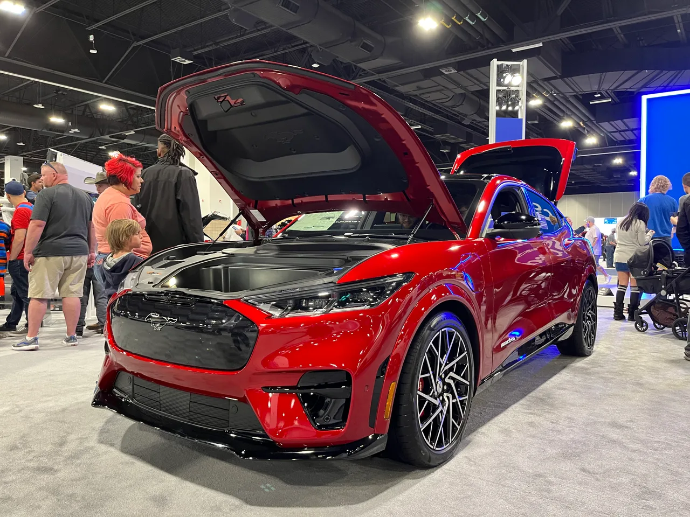

▲ 머스탱 마하-E. 같은 머스탱 이름을 쓰지만 보험료는 가솔린 쿠페보다 훨씬 비싸다 ⓒ Automotive Rhythms, Wikimedia Commons (CC BY-SA 4.0)
같은 회사, 같은 이름을 달고도 보험료는 30% 넘게 차이 난다면.
보험 비교 업체 인슈리파이(Insurify)의 2026년 전기차 보험 보고서에 따르면, 포드 머스탱 마하-E의 연평균 보험료는 3,197달러로, 가솔린 엔진을 얹은 일반 머스탱 쿠페(2,427달러)보다 약 32% 높다. 흥미로운 건 포드라는 브랜드 자체는 중고차 기준으로 오히려 보험료가 싼 축에 속한다는 점이다. 유독 마하-E만 브랜드 평균에서 튀는 '아웃라이어'가 된 셈이다.
1. 무엇이 '아웃라이어'라는 뜻인가
아웃라이어(outlier)란 전체 흐름에서 유독 벗어난 값을 뜻한다. autoevolution 보도에 따르면 포드는 중고차를 기준으로 브랜드 전체 평균 보험료가 비교적 저렴한 축에 속하는 제조사다. 그런데 유독 머스탱 마하-E만 이 흐름에서 크게 벗어나, 브랜드 내에서도 가장 비싼 축에 속하는 모델로 분류됐다.
같은 '머스탱'이라는 이름을 쓰면서도 파워트레인만 다른 두 모델을 나란히 놓고 보면 격차가 더 뚜렷하다. 가솔린 머스탱 쿠페는 연 2,427달러, 전기 SUV인 마하-E는 연 3,197달러로 약 770달러, 비율로는 32%가량 차이가 난다.
| 모델 | 파워트레인 | 연평균 보험료 |
|---|---|---|
| 포드 머스탱(쿠페) | 가솔린 | 2,427달러 |
| 포드 머스탱 마하-E | 순수전기(BEV) | 3,197달러 |

▲ 머스탱 마하-E 측면. 겉모습은 SUV지만 보험사 입장에서는 전기차 특유의 수리비 구조가 더 크게 작용한다 ⓒ Corqe, Wikimedia Commons (CC0)
2. 왜 유독 마하-E만 비쌀까
보험사들이 지목하는 원인은 크게 수리비, 부품 구조, 차량 가치 세 가지로 요약된다.
| 요인 | 내용 |
|---|---|
| 수리비 | 연평균 1,191달러로 포드 35개 모델 중 3위. 전기 파워트레인·배터리팩 관련 부품이 고가 |
| 기술 복잡성 | 고전압 배터리·전동 구동계·첨단 전자장비로 사고 시 정비 난도와 비용이 내연기관 대비 높음 |
| 차량 가치 | 신차 가격대가 높아 동일 사고라도 보상 기준 금액 자체가 큼 |
| 도난 위험 | 인기 모델일수록 도난·부품 절도 위험이 커지며 보험료 산정에 반영 |
특히 배터리팩은 통상 차량 가치의 절반가량을 차지하는 것으로 알려져 있다. 경미한 충돌이라도 배터리팩 손상이 의심되면 통째로 교체하는 경우가 많아, 수리비가 내연기관 차량보다 큰 폭으로 뛰는 구조다.
📍 라이트닝은 왜 다를까
같은 포드의 전기 픽업트럭인 F-150 라이트닝은 오히려 경쟁 전기 픽업들보다 보험료가 저렴한 것으로 나타났다. 즉 '전기차라서 무조건 비싸다'는 단순한 공식이 아니라, 차종별 사고 이력·수리 데이터·시장 내 포지셔닝에 따라 결과가 크게 갈린다는 뜻이다. 마하-E는 그 갈림길에서 비싼 쪽에 걸린 사례로 꼽힌다.
3. 전기차 보험료, 전반적인 흐름은
전기차 보험료가 내연기관보다 비싼 현상 자체는 마하-E만의 이야기가 아니다. 배터리·전자장비 중심의 설계, 정비 인프라의 상대적 미성숙, 부품 공급망 문제 등이 업계 전반에 공통으로 작용해왔다. Insurify의 2026년 EV 보고서(2억 3,500만 건 이상의 견적 데이터 분석)에 따르면, 전기차 전체 평균 보험료는 연 3,159달러로 가솔린차(연 2,218달러)보다 약 42% 높다. 마하-E와 가솔린 머스탱 간 32% 격차는 이 업계 평균 격차보다는 다소 낮은 수준이다.
다만 CarEdge 등 보험 비교 업체들은 "시간이 지나며 EV와 내연기관차 간 보험료 격차가 점차 좁혀지는 추세"라고 짚는다. 정비 인력의 전기차 숙련도가 높아지고, 배터리팩 부분 수리 기술이 발전하며, 사고 데이터가 누적될수록 보험사의 리스크 산정도 더 정교해지기 때문이다.

▲ 마하-E GT 후면. 보험사 입장에서는 겉모습보다 파워트레인 구조가 요율 산정에 더 크게 반영된다 ⓒ Elise240SX, Wikimedia Commons (CC BY-SA 4.0)
4. 마하-E를 고려 중이라면 체크할 점
보험료는 신차 구매 결정에서 종종 뒷전으로 밀리지만, 실제 보유 비용에서 차지하는 비중이 작지 않다. 마하-E 구매를 고려한다면 아래 사항을 미리 확인해볼 만하다.
✅ 마하-E 구매 전 확인 사항
· 보험료 사전 견적 — 계약 전 실제 거주 지역·운전자 연령 기준 견적을 받아보면 체감 격차를 정확히 알 수 있음
· 트림별 차이 — 고성능 GT 트림은 표준형보다 보험료가 더 높게 책정되는 경향
· 배터리 보증 — 배터리팩 보증 기간·조건은 사고 시 보험사와의 협상에도 영향을 줄 수 있음
· 정비 네트워크 — 거주 지역에 전기차 전문 정비망이 갖춰져 있는지도 실질 비용에 영향
5. 관전 포인트
포드 입장에서 마하-E는 브랜드 전동화 전략의 상징적 모델이다. 하지만 보험료라는 실질적인 보유 비용 지표에서 브랜드 평균을 벗어난 아웃라이어로 지목된 것은, 전동화 모델 확장 과정에서 제조사들이 함께 풀어야 할 과제가 여전히 많다는 점을 보여준다.
Insurify의 2026년 전기차 보험 보고서 원문은 관련 매체를 통해 확인할 수 있다. Ford Authority 원문 바로가기

▲ 머스탱 마하-E. 전동화 라인업의 간판 모델이지만, 보유 비용 측면에서는 아직 풀어야 할 숙제가 있다 ⓒ Wikimedia Commons
6. 요약
포드는 브랜드 전체로 보면 중고차 보험료가 저렴한 축에 속하지만, 머스탱 마하-E만은 예외다. Insurify의 2026년 보고서에 따르면 마하-E의 연평균 보험료는 3,197달러로 가솔린 머스탱(2,427달러)보다 약 32% 높다.
원인으로는 높은 수리비(연평균 1,191달러, 포드 35개 모델 중 3위), 배터리·전동 구동계 관련 정비 난도, 높은 차량 가치와 도난 위험 등이 꼽힌다. 같은 포드 전기차인 F-150 라이트닝이 오히려 경쟁 모델보다 저렴한 것과 대조적이다.
다만 업계에서는 EV와 내연기관 간 보험료 격차가 시간이 지나며 점차 좁혀지는 추세라고 보고 있어, 마하-E의 '아웃라이어' 지위도 장기적으로는 완화될 가능성이 있다.